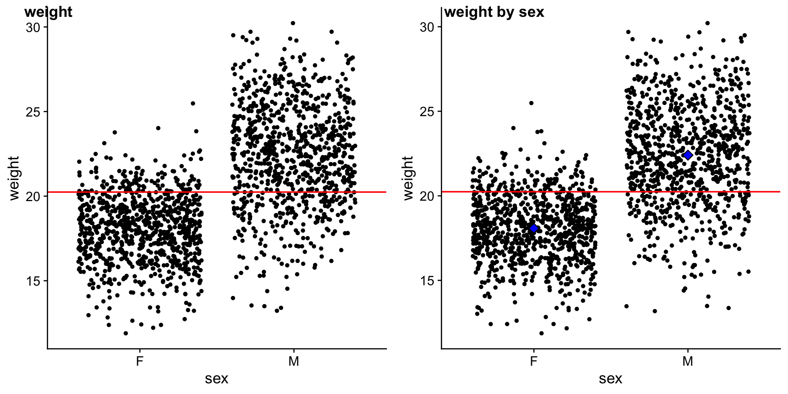

# we are reading the data directly from the internet
biochem <- read_tsv("http://mtweb.cs.ucl.ac.uk/HSMICE/PHENOTYPES/Biochemistry.txt", show_col_types = FALSE) |>
janitor::clean_names()
# simplify names a bit more
colnames(biochem) <- gsub(pattern = "biochem_", replacement = "", colnames(biochem))
# we are going to simplify this a bit and only keep some columns
keep <- colnames(biochem)[c(1,6,9,14,15,24:28)]
biochem <- biochem[,keep]
# get weights for each individual mouse
# careful: did not come with column names
weight <- read_tsv("http://mtweb.cs.ucl.ac.uk/HSMICE/PHENOTYPES/weight", col_names = F, show_col_types = FALSE)
# add column names
colnames(weight) <- c("subject_name","weight")
# add weight to biochem table and get rid of NAs
# rename sex to sex
b <- inner_join(biochem, weight, by="subject_name") |>
na.omit() |>
rename(sex=gender)Stats Bootcamp - class 14
Hypothesis testing
Prepare mouse biochem data
Learning objectives
- Formulate and Execute null hypothesis testing
- Identify and Perform the proper statistical test for data type/comparison
- Calculate and Interpret p-values
Random variables
Response Variable ( y - aka dependent or outcome variable): this variable is predicted or its variation is explained by the explanatory variable. In an experiment, this is the outcome that is measured following manipulation of the explanatory variable.
Explanatory Variable ( x - aka independent or predictor variable): explains variations in the response variable. In an experiment, it is manipulated by the researcher.
The simplicity underlying common tests
Most of the common statistical models (t-test, correlation, ANOVA; etc.) are special cases of linear models or a very close approximation. This simplicity means that there is less to learn. It all comes down to:
\(y = a \cdot x + b\)
This needless complexity multiplies when students try to rote learn the parametric assumptions underlying each test separately rather than deducing them from the linear model.
Stats equation for a line
Model:
\(y\) equals the intercept (\(\beta_0\)) pluss a slope (\(\beta_1\)) times \(x\).
\(y = \beta_0 + \beta_1 x \qquad \qquad \mathcal{H}_0: \beta_1 = 0\)
… which is the same as \(y = b + a \cdot x\).
The short hand for this in R: y ~ 1 + x
R interprets this as:
y = 1*number + x*othernumber
The task of t-tests, lm, etc., is simply to find the numbers that best predict \(y\).
Appropriate statistical test cheatsheet

Comparing means between two groups
We will compare mouse \(weight\) by \(sex\).
# plot weight by sex
p_ws <- ggplot(b,
aes(x = sex, y = weight)) +
geom_jitter(size=1) +
geom_hline(yintercept = mean(b$weight),
color = "red") +
theme_cowplot()
# plot weight by sex with mean weight and mean weight by sex
p_ws2 <- ggplot(b,
aes(x = sex, y = weight)) +
geom_jitter(size=1) +
geom_hline(yintercept = mean(b$weight),
color = "red") +
stat_summary(fun = "mean", geom = "point", fill = "blue", shape = 23, size=3) +
theme_cowplot()
plot_grid(p_ws, p_ws2, ncol = 2, labels = c("weight","weight by sex"), scale = c(1,1))
STEP 1: Can mouse sex explain mouse weight?
Model: \(y_{i} = \beta_0 \cdot 1+ \beta_1 \cdot x_{i}\)
Null Hypothesis: \(\mathcal{H}_0: \beta_1 = 0\)
\(\mathcal{H}_0:\) mouse \(sex\) does NOT explain \(weight\)
Alternative Hypothesis: \(\mathcal{H}_1: \beta_1 \neq 0\)
\(\mathcal{H}_1:\) mouse \(sex\) does explain \(weight\)
Important: \(x_{i}\) is an indicator (0 or 1) saying whether data point i was sampled from one or the other group (female or male).
We will explore this in more detail soon.
STEP 2: Fit linear model and examine results
fit_ws <- Fit summary:
??(fit_ws) |>
gt() |>
fmt_number(columns = r.squared:statistic, decimals = 3)Coefficient summary:
??(fit_ws) |>
gt() |>
fmt_number(columns =estimate:statistic, decimals = 3)Collecting residuals and other information
add residuals and other information
#augment
b_ws <- # mean weight
avg_w <-
# mean weight female
avg_wf <-
# mean weight male
avg_wm <- STEP 3: Visualize the error around fit
# plot of data with mean and colored by residuals
p_ws <- ggplot(b_ws,
aes(x = sex, y = weight)) +
geom_point(position = position_jitter(),
aes(color = .resid)) +
scale_color_gradient2(low = "blue",
mid = "black",
high = "yellow") +
geom_hline(yintercept = ??,
color = "darkgrey") +
geom_segment(aes(x=.5, xend=1.5,
y=??, yend=??),
color="red") +
geom_segment(aes(x=1.5, xend=2.5,
y=??), yend=??,
color="red") +
theme_cowplot()
p_ws STEP 3: Visualize the error around the null (mean weight)
p_w <- ggplot(b_ws,
aes(x = sex, y = weight)) +
geom_point(position = position_jitter(),
aes(color = weight-avg_w)) +
scale_color_gradient2(low = "blue",
mid = "black",
high = "yellow") +
geom_hline(yintercept = avg_w,
color = "darkgrey") +
theme_cowplot()
p_wCompare fit error to null error graphically
plot_grid(p_ws, p_w, ncol = 2, labels = c("weight by sex","weight by intercept"))We are fitting 2 lines to the data. For the weight by sex model of the fit (left), we fit 2 lines. For the weight by null model (right) we fit 1 line.
Exceptions: mice with highest residuals
Matrices Interlude Begin
How do we go from 2 fit lines to 1 equation
Since we don’t want to calculate any of this by hand, the framework needs to be flexible such that a computer can execute for different flavors of comparison (cont y vs cont x, cont y vs 2 or more categorical x, …).
Let’s focus on just a few mice
Remember that:
\(weight\) is \(y\)
\(F_{avg}\) is the average \(weight\) of \(females\)
\(M_{avg}\) is the average \(weight\) of \(males\)
. . .
A048054885, female
\(y_{85}= 1 \cdot F_{avg} + 0 \cdot M_{avg} + residual_{85}\)
A067109771, female
\(y_{71}= 1 \cdot F_{avg} + 0 \cdot M_{avg} + residual_{71}\)
. . .
A066822351, male
\(y_{51}= 0 \cdot F_{avg} + 1 \cdot M_{avg} + residual_{51}\)
A048274362, male
\(y_{62}= 0 \cdot F_{avg} + 1 \cdot M_{avg} + residual_{62}\)
Let’s focus on just a few mice
Need a volunteer
Me: Ooohh my, imagine how tedious it would be to do this for all mice…
Volunteer: Wait a sec…isn’t there a way to formulate this as a matrix algebra problem.
Me: You’re right - I’m so glad you asked! Let’s conjur matrix-magic to solve this problem..
. . .
\(f_{avg} = \beta_0\) is the average \(weight\) of \(female\) mice
\(m_{avg} = \beta_1\) is the average \(weight\) of \(male\) mice
. . .
\(\begin{bmatrix} y_{85} \\ y_{71} \\ y_{51} \\y_{62} \end{bmatrix} = \begin{bmatrix} 1 & 0 \\ 1 & 0 \\ 0 & 1 \\ 0 & 1 \end{bmatrix} \cdot \begin{bmatrix} \beta_0 \\ \beta_1 \end{bmatrix} + \begin{bmatrix} e_{85} \\ e_{71} \\ e_{51} \\e_{62} \end{bmatrix}\)
. . .
So basically this looks like the same equation for fitting a line we’ve been discussing, just w/a few more dimensions :)
This is a conceptual peak into the underbelly of how the \(\beta\) cofficients and least squares is performed using matrix operations (linear algebra). If you are interested in learning more see references at the end of the slides.
Matrices Interlude FIN
Calculate \(R^2\)
\(SS_{fit}\) — sum of squared errors around the least-squares fit
ss_fit <- \(SS_{null}\) — sum of squared errors around the mean of \(y\)
ss_null <- \(R^2 = 1 - \displaystyle \frac {SS_{fit}}{SS_{null}}\)
rsq <- ??glance(fit_ws) |> select(r.squared)Woohoo!!
Compare to traditional t-test
b |>
?? |>
select(-c(n1,n2,df)) |>
gt()tidy(fit_ws) |>
select(term, estimate, statistic, p.value) |>
gt()prep data for fams
# i have pre-selected some families to compare
myfams <- c("B1.5:E1.4(4) B1.5:A1.4(5)",
"F1.3:A1.2(3) F1.3:E2.2(3)",
"A1.3:D1.2(3) A1.3:H1.2(3)",
"D5.4:G2.3(4) D5.4:C4.3(4)")
# only keep the familys in myfams
bfam <- b |>
filter(family %in% myfams) |>
droplevels()
# simplify family names and make factor
bfam$family <- gsub(pattern = "\\..*", replacement = "", x = bfam$family) |>
as.factor()
# make B1 the reference (most similar to overall mean)
bfam$family <- relevel(x = bfam$family, ref ="B1")STEP 1: Can family explain weight?
ANOVA -> comparing means of 3 or more groups.
Let’s compare the \(weight\) by \(family\), but only for a few selected families.
ggplot(data = ??,
aes(??)) +
geom_jitter(width = .2) +
theme_cowplot()What does the model look like?
Model: \(y_{i} = \beta_0 \cdot 1+ \beta_1 \cdot x_{i}\)
Null Hypothesis: \(\mathcal{H}_0: \beta_1 = 0\)
\(\mathcal{H}_0:\) mouse \(family\) does NOT explain \(weight\)
Alternative Hypothesis: \(\mathcal{H}_1: \beta_1 \neq 0\)
\(\mathcal{H}_1:\) mouse \(family\) does explain \(weight\)
Important: \(x_{i}\) is an indicator (0 or 1) saying which group point \(i\) was sampled from using the matrix encoding of 0s and 1s.
Below is an example depicting 6 observations with 2 from each of 3 families:
\(\begin{bmatrix} y_{1} \\ y_{2} \\ y_{3} \\y_{4} \\y_{5} \\y_{5} \end{bmatrix} = \begin{bmatrix} 1 & 0 & 0 \\ 1 & 0 & 0 \\ 0 & 1 & 0 \\ 0 & 1 & 0 \\ 0 & 0 & 1 \\ 0 & 0 & 1 \\ \end{bmatrix} \cdot \begin{bmatrix} \beta_0 \\ \beta_1 \end{bmatrix} + \begin{bmatrix} e_{1} \\ e_{2} \\ e_{3} \\e_{4} \\e_{5} \\e_{6} \end{bmatrix}\)
STEP 2: Fit linear model and examine results
fit_wf <- ??Fit summary:
glance(fit_wf) |>
gt() |>
fmt_number(columns = r.squared:statistic, decimals = 3)Coefficient summary:
tidy(fit_wf) |>
gt() |>
fmt_number(columns =estimate:statistic, decimals = 3)Collecting residuals and other information
add residuals and other information
#augment
b_wf <-
# mean weight per fam
mean_B1 <- fit_wf$coefficients[??]
mean_A1 <- mean_B1 +
fit_wf$coefficients[??]
mean_D5 <- mean_B1 +
fit_wf$coefficients[??]
mean_F1 <- mean_B1 +
fit_wf$coefficients[??]STEP 3: Visualize the error around fit
ggplot(b_wf,
aes(x = family, y = weight)) +
geom_point(position = position_jitter(),
aes(color = .resid)) +
scale_color_gradient2(low = "blue",
mid = "black",
high = "yellow") +
geom_segment(aes(x=.5, xend=1.5, y=mean_B1, yend=mean_B1), color="red") +
geom_segment(aes(x=1.5, xend=2.5, y=mean_A1, yend=mean_A1), color="red") +
geom_segment(aes(x=2.5, xend=3.5, y=mean_D5, yend=mean_D5), color="red") +
geom_segment(aes(x=3.5, xend=4.5, y=mean_F1, yend=mean_F1), color="red") +
geom_segment(aes(x=.5, xend=4.5, y=mean(weight), yend=mean(weight)), color="black") +
theme_cowplot()Compare to traditional ANOVA
bfam |>
?? |>
gt()tidy(fit_wf) |>
select(term, estimate, statistic, p.value) |>
gt()Comparing 2 groups of 2 continuous variables
ANCOVA, Analysis of Covariance. ANOVA with more than one independent variable. What is the impact of mouse age on mouse weight for males vs females.
ggplot(data = b, aes(y = weight, x = age, color=sex)) +
geom_point(size=.5) +
geom_smooth(method=lm) +
theme_cowplot()STEP 2: Fit linear model and examine results
fit_wa_sex <- lm(formula = weight ~ 1 + age + sex, data = b)
b_wa_sex <- augment(fit_ws, data = b)Fit summary:
glance(fit_wa_sex) |>
gt() |>
fmt_number(columns = r.squared:statistic, decimals = 3)Compare to traditional:
aov(formula = weight ~ 1 + age + sex, data = b) %>%
glance()References
Linear Models Pt.3 - Design Matrices